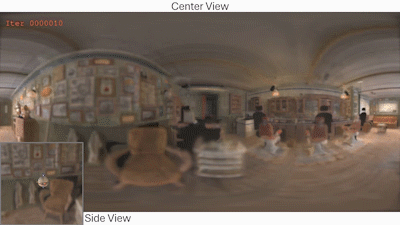
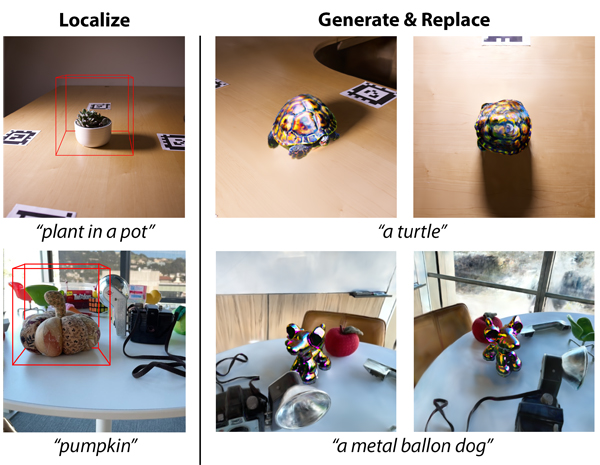
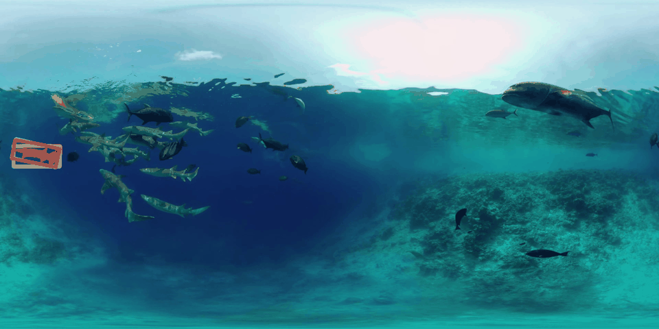
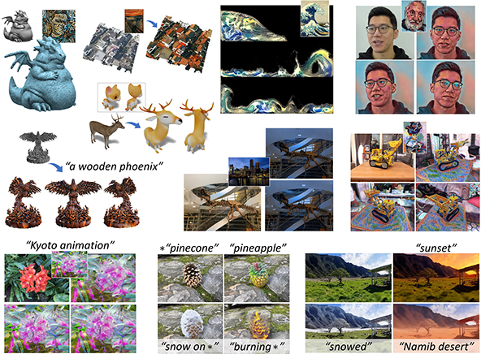
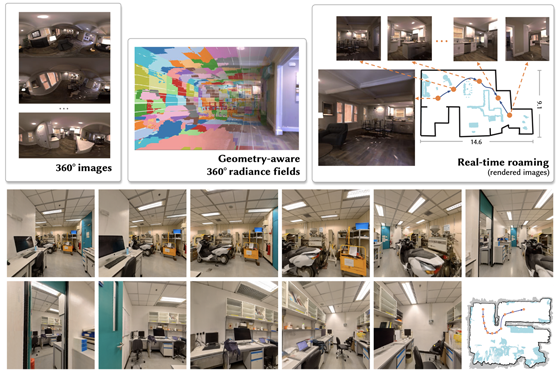
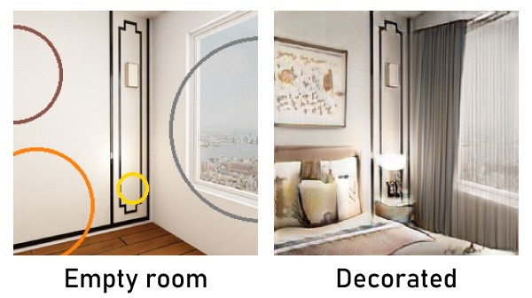
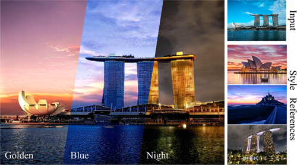

EDUCATION AND WORKING EXPERIENCE
2019 - 2024, Doctor of Philosophy in Computer Science and Engineering, The Hong Kong University of Science and Technology
2018 – 2019, Analytics Programmer, Aigens Technology Limited (Hong Kong)
2016 – 2018, Master of Science in Computer Science, The University of Hong Kong
2012 – 2016, Bachelor of Engineering in Digital Media Technology, Zhejiang University
FEATURED RESEARCH
*Equal contribution Corresponding author
SC-OmniGS: Self-Calibrating Omnidirectional Gaussian Splatting
Huajian Huang*, Yingshu Chen*, Longwei Li, Hui Cheng, Tristan Braud, Yajie Zhao, Sai-Kit Yeung
International Conference on Learning Representations (ICLR) 2025.
SC-OmniGS jointly calibrates omnidirectional camera intrinsics and extrinsics to recover fine-grained 3D Gaussians.

Localized Gaussian Splatting Editing with Contextual Awareness
Hanyuan Xiao, Yingshu Chen, Huajian Huang, Haolin Xiong, Jing Yang, Pratusha Prasad, Yajie Zhao
Winter Conference on Applications of Computer Vision (WACV) 2025.
A text-guided 3DGS scene local editing and generation pipeline with multi-view and illumination consistency.

360VOTS: Visual Object Tracking and Segmentation in Omnidirectional Videos
Yinzhe Xu, Huajian Huang, Yingshu Chen, Sai-Kit Yeung
Arxiv 2024.
360VOTS is a benchmark dataset for omnidirectional object tracking and segmentation, comprising 360VOT and 360VOS datasets. 360VOT offers unbiased ground truth of (rotated) bounding boxes and field-of-views, while 360VOS provides pixel-wise masks. In addition, a general 360 tracking framework and new metrics are tailored for both omnidirectional visual object tracking and segmentation tasks.

StyleCity: Large-Scale 3D Urban Scenes Stylization
Yingshu Chen, Huajian Huang, Tuan-Anh Vu, Ka Chun Shum, Sai-Kit Yeung
European Conference on Computer Vision (ECCV) 2024.
StyleCity is a vision-and-text-driven texture stylization system for large-scale 3D urban scenes. It synthesizes style-aligned urban texture and 360° sky background, while keeping the scene identity intact.

Advances in 3D Neural Stylization: A Survey
Yingshu Chen, Guocheng Shao, Ka Chun Shum, Binh-Son Hua, Sai-Kit Yeung
International Journal of Computer Vision (IJCV) 2025.
Comprehensive review for neural stylization on 3D data, including meshes, neural fields, point clouds, volume, implicit shapes.

360VOT: A New Benchmark Dataset for Omnidirectional Visual Object Tracking
Huajian Huang, Yinzhe Xu, Yingshu Chen, Sai-Kit Yeung
International Conference on Computer Vision (ICCV) 2023.
360VOT aims at the novel task of omnidirectional object tracking with new video object tracking benchmark dataset and evaluation metrics.

360Roam: Real-Time Indoor Roaming Using Geometry-Aware 360ᵒ Radiance Fields
Huajian Huang, Yingshu Chen, Tianjian Zhang, Sai-Kit Yeung
Arxiv 2022 | SIGGRAPH Asia 2022 Technical Communications.
360Roam is a novel scene-level NeRF system that can synthesize novel views of large-scale multi-room indoor scenes and support real-time indoor roaming.

Neural Scene Decoration from a Single Photograph
Hong Wing Pang, Yingshu Chen, Phuoc-Hieu T. Le, Binh-Son Hua, Thanh Nguyen, Sai-Kit Yeung
European Conference on Computer Vision (ECCV) 2022.
Given a photograph of an empty indoor space and a list of decorations with layout determined by user, we aim to synthesize a new image of the same space with desired furnishing and decorations.

Time-of-Day Neural Style Transfer for Architectural Photographs
Yingshu Chen, Tuan-Anh Vu, Ka-Chun Shum, Binh-Son Hua, Sai-Kit Yeung
International Conference on Computational Photography (ICCP) 2022.
Architectural Photography Style Transfer aims to transfer background dynamic texture and chrominance, and transfer sufficient styles for foreground while keeping foreground geometry intact.
PROJECTS
3D Advertisement Poster (WebGL): A web-based demo for 3D advertisment display.
Human Computer Interaction via Brainwave Control (C++ and Qt): Demo Video
- Study the effect of user interface (UI) elements and human-induced factors on electroencephalography (EEG) signals, proposing a brain-computer interface (BCI) typing system through EEG data retrieved from the wireless Emotiv neuroheadset.Movie Trend Visualization: responsible for data collection, overall design, top movie visualization and analysis, webpage design.
Design and Method Study of Two-handed Natural Interactive Scene Modeling Applied on Virtual Reality (Unity with C#):
- Free hand gesture control for simple modeling with Leap Motion.Original Design of Websites with Interaction Visualization: UG Student Research Training Program (SRTP)